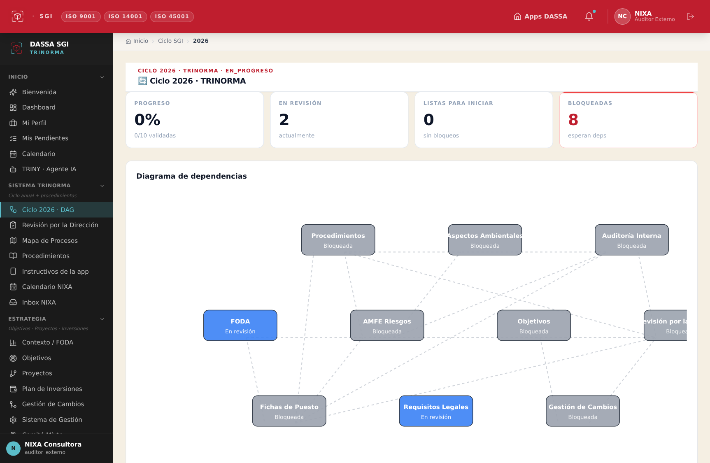
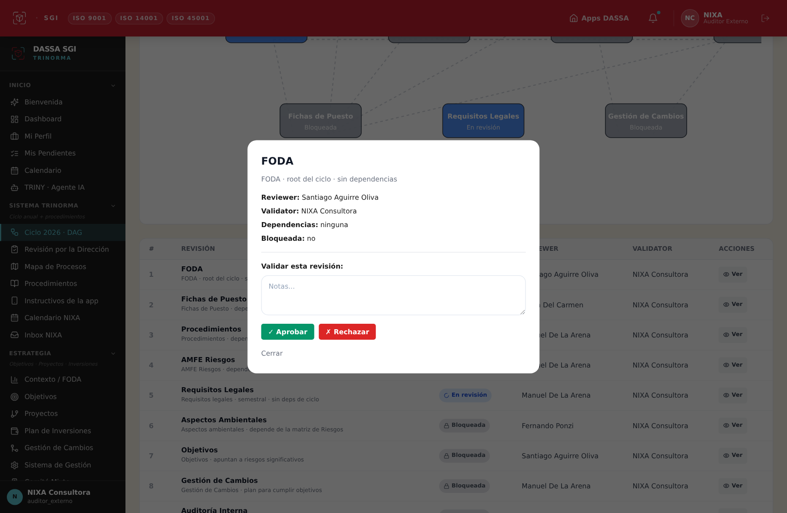

Cómo validamos juntos el SGI
La dinámica de trabajo entre DASSA y NIXA para revisar y validar todo el ciclo anual de la Trinorma, paso a paso.
1La idea en una frase
El ciclo anual del SGI es un recorrido de 10 etapas encadenadas. DASSA prepara cada etapa (carga y deja lista la información) y NIXA la valida (revisa y aprueba). Cada vez que NIXA aprueba una etapa, el sistema desbloquea automáticamente la siguiente. Así avanzamos en cadena, sin perder el hilo, hasta cerrar el ciclo con la Revisión por la Dirección.
- Cargamos la información de cada módulo (FODA, fichas, procedimientos, riesgos…).
- Marcamos la etapa como "Iniciar" → queda En revisión.
- Te avisamos que está lista para que la valides.
- Entrás a la etapa En revisión, revisás el contenido.
- ✓ Aprobás (o ✗ Rechazás con un comentario).
- Al aprobar, se desbloquea la siguiente automáticamente.
2Los 4 estados de cada etapa
3El recorrido de las 10 etapas
Cada etapa se habilita cuando las que tiene debajo (sus dependencias) están validadas.

4Cómo validás una etapa (paso a paso)

5Por dónde empezamos
Ahora mismo hay 2 etapas listas para que valides (están en azul, "En revisión"):
① FODA⑤ Requisitos LegalesCuando valides FODA, se desbloquea Fichas de Puesto, y así seguimos la cadena. Vamos etapa por etapa, juntos: DASSA prepara y te avisa, vos validás. 💪